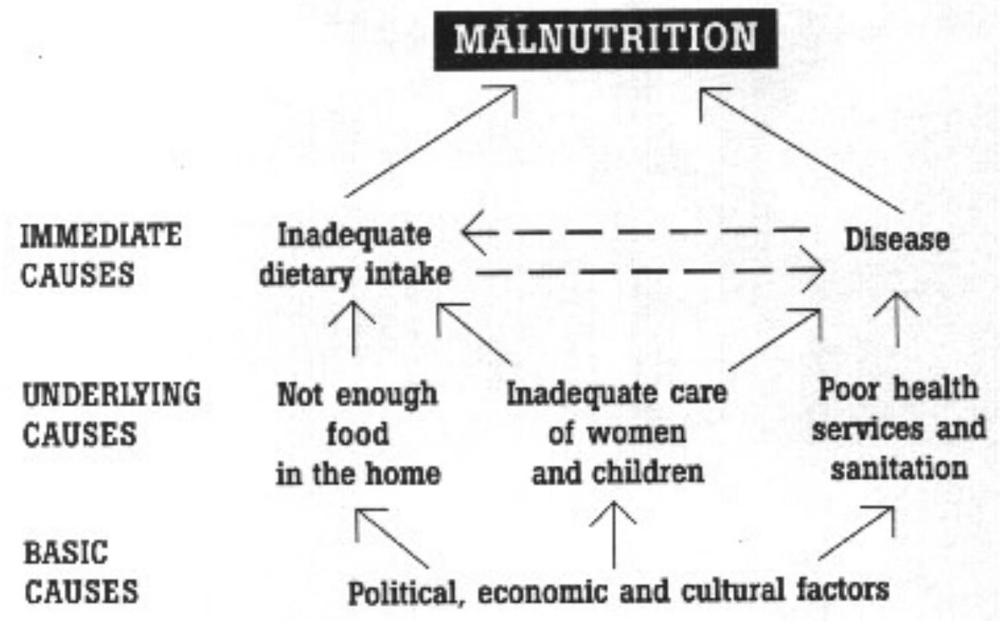

2. COMMUNITY NUTRITION PROBLEMS
Components of Nutrition
Malnutrition:
state of the body not having enough nutrients or has excess of the required nutrients.
Components of nutrition
- Macronutrients; proteins, fats&carbohydrates are macronutrients that make up the bulk or a diet &supply the bodies energy.
In resource poor population carbohydrates are often a large part of the diet and the main source of energy. Fats also an essential component in the diet its resource population makes up about $10\%$ of the diet.
Fats also supply energy and are important in cell formations. Proteins are required to build new tissues and derived from animal origin such as meat, milk and eggs. Theseanimals by product contain essential amino acids that cannot be produced by the body but must be eaten.
Proteins from cereals and pulse alone do not provide the sufficient balanced amino acids and therefore to obtain the correct balance without requiring from an animal sources cereals and pulses must be combined when planning a meal - Micronutrients; There are around 40 different micronutrients that are essential for good health. They are divided into two classess; type one includes iodine, ion, vit A and C Deficiencies in type 1 micronutrient and thus deficiency in type 1 micronutrient is not determined by anthropometric measurements
Deficiency in type 1 causes major illnesses like anaemia, scuvy and impaired immunity Type 2 includes magnesium,sulphur,phosphorous,zinc,potassium,chloride and sodium They are essential for growth and tissue repair. Type 2 micronutrients are required in small quantities the correct balance is essential for good health.
Macronutrients are required in large amounts in the body
A deficiency in any of these micronutrients leads to growth failure measured by wasting and stunting.
CATEGORIES/TYPES OF MALNUTRITION
There are two major categories
- Acute malnutrition
- Chronic malnutrition
1. Acute malnutrition
is brought about by the shortage of food for short periods of time which results into wasting. It's categorized into
- Moderate acute malnutrition
- Severe acute malnutrition
There two determined by the patient degree of wasting SAM is further classified into two:
- Marasmus
- Kwashiorkor
Patients may present with a combination of the two, which is referred to as marasmic kwashiorkor.
CHARACTERISTICS OF MARASMUS &KWASHIORKOR
MARASMUS
- Sever weight loss and wasting
- Ribs are prominent
- Limbs are emaciated
- Muscle wasting
- Good appetite
- With correct treatment there is good progression.
KWASHIORKOR
- Bi-lateral oedema and fluid accumulation
- Loss of appetite
- Brittle trinning hair
- Hair colour change
- Apathy and irritable
- Face may seem swollen
- High risk of death
CHRONIC MALNUTRITION
It's determined by a patient degree of stunting (when a child has not reached his or her expected height for a given age)
To treat a patient with chronic malnutrition requires a long-term focus that considers household food security in the long term,homecare practices i.e. feeding and hygiene and issues related to public health.
Chronic malnutrition is as a result of long deprivation of food for a long period of time.
CAUSES OF MALNUTRITION
This conceptual framework on the causes of malnutrition was developed in 1990 as part of the UNICEF nutrition strategy. The framework shows that causes of malnutrition are multisectoral, embracing food, health and caring practices. They are also classified as immediate, underlying, and basic, whereby factors at one level influence other levels. The framework is used at national, district and local levels, to help plan effective actions to improve nutrition. It serves as a guide in assessing and analysing the causes of the nutrition problem and helps in identifying the most appropriate mixture of actions.
Immediate causes
- Inadequate dietary intake: due to insufficient and poor variety of food, too few meals or foods being too bulky
- Diseases: such as diarrhoea, acute respiratory infections, measles, malaria, worms and AIDS. Diseases cause malnutrition by:
- Reducing appetite and absorption the gut so the body gets fewer nutrients
- Increasing the rate at which the body uses nutrients.
Health workers can help prevent the immediate causes of malnutrition by:
- Promoting exclusive breastfeeding for four to six months, then encouraging mothers to introduce nutritious complementary foods while continuing to breastfeed
- Discussing with families how to improve child feeding practices
- Distributing micronutrients such as vitamin A and iron if needed
- Reducing disease by promoting immunisation, deworming, good hygiene practices and use of safe water. Early treatment and care of sick children during illness and the recovery period is also important.
Underlying causes:
- Not enough food (Household Food Insecurity), and sometimes water, in the home. There are many reasons why families are unable to produce or buy enough food to meet their nutritional needs. For example: poverty, landlessness, illness, drought, flood and armed conflict.
Many of the activities needed to increase the amount of food available in homes are outside the role of health workers. However health workers can play a part by encouraging home gardens and small-scale income generating activities. They can also strengthen links with other sectors, for example by working with agricultural extension workers. - Inadequate care for children and women:A child's growth and development depends on good care. But to give good care, a carer (usually the mother) needs to know which behaviours help a child's growth and development. Care behaviours that support nutrition include:
- Good hygiene practices
- Safe food preparation and food storage
- Giving appropriate food at the right age
- Psychosocial care such as attention, affection and encouragement.
Health workers can encourage good care for both women and children by:- Encouraging support groups such as breastfeeding groups
- Promoting services, such as antenatal care and immunisation, in the local community
- Supporting families to improve the care of sick children at home.
- Poor health services and unhealthy environments:Improving health services, sanitation, water supplies and the home environment help to prevent malnutrition through control of disease.
Basic causes:
They are political, economic and cultural situations, which affect the underlying causes.
Political causes include instability, poor system of government, and centralisation of authority. Civil wars can cause malnutrition because often people are displaced and unable to grow or buy food.
Economic causes are linked to poverty. Poor people are normally the most malnourished. A minimum income is necessary to get the food, goods and services needed for good nutrition. Alleviation of poverty is essential to the elimination of malnutrition.
Culture determines eating, sanitation and health-seeking behaviours, which can have good, neutral or negative impacts on nutrition.
Environmental causes: natural disasters such as drought, famine, earthquake can cause malnutrition because of the effects these have effect on growing of crops or harvest.
Health workers can help to remove basic causes of malnutrition. For example, they can identify beliefs and habits about feeding children and promote those which improve nutrition.